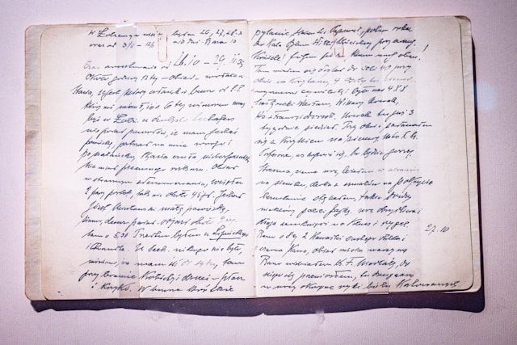
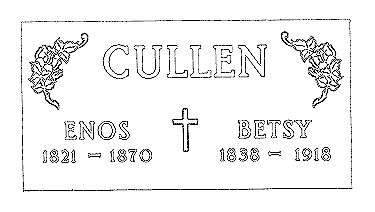

Main Genealogy Page - Cullen Family Tree
My Main Line of Descent from Thomas Cullen of Cromwell, Nottinghamshire, born about 1690
1'st Generation: Thomas and Elizabeth (Whitton) Cullen
Husband: Thomas Cullen. Thomas Cullen of Cromwell was born approx 1690. Though he is stated to have been from Cromwell at the time of his marriage it is highly likely that his birth occured in Upton. It is suspected that Thomas was the son of Gervase & Elianor Cullen of Upton. The will of Elianor, wife of Gervase Cullen of Upton, probated in 1699, mentions a son Thomas Cullen. This son was nearly certainly the Thomas Cullen christened Jan 26, 1692 at Southwell to parents Gervase & Elianor Cullen. I suspect that this Gervase is the Gervas, Yeoman of Upton, who died in 1717 at the age of 55. He was born in 1662 to parents Gervase & Katherine (Robinson) Cullen of Upton. This ties into the main line of Cullens in Upton back to Richard who died 1579/80.
Wife: Elizabeth Whitton: Christened in Cromwell in 1697, the daughter of Robert and Elizabeth Whitton. The Whittons had lived in Cromwell for a few generations. At the time of her marriage to Thomas Cullen, Elizabeth is stated to have been from Kelham. The genealogy of the Whitton family has been thoroughly researched by Mrs. Lisa Maurier of Lincolnshire. Lisa has also been very kind and patient and has provided a mountain of research that is just now finding its way onto the site.
Married: October 7, 1715 at South Muskham, Nottinghamshire.
Children (all christened at Upton by Southwell):
- (?)Thomas: ch Aug 26, 1716 Averham
- Gervase: ch. Apr 20, 1718 Upton by Southwell, Notts
- Elizabeth: ch. 1722
- Sarah: ch. 1723
- Mary: ch. 1724
- William: ch. 1726
- John: ch. 1726
- Thomas: ch. 1730 (actually son of Thomas & Elizabeth (Flinders) Cullen)
- Ann: ch. 1731 (actually dau of Thomas & Elizabeth (Flinders) Cullen)
2'nd Generation: Gervase and Elizabeth (Millward) Cullen
Husband: Gervase Cullen. Born 1718 Upton, Nottinghamshire, England. Christened Apr 20, 1718 at Upton to parents Thomas & Elizabeth Cullen (see image below, courtesy of Lisa Maurier). Died in May of 1786 in Spanby, Lincolnshire (farmer; Wills Index). You can read an estate announcement for Gervase on the Obituary Page. Gervase is descended from the line of "The Rude Forefathers" in Upton.

Photo by Gabriela on Unsplash [3]
Wife: Elizabeth Millward of Nottingham, Notts. Born 1724. The first child to the marriage was christened at Upton but the family had relocated to Grantham Parish in Lincolnshire by about 1753.
Married: Aug 7, 1749 at North Muskham, Nottinghamshire.
Children:
- Mary: ch. Apr 13, 1750 Upton by Southwell, Notts.
m. Robert Turner Sep 23, 1789 Spanby, Lincs. - Thomas: ch. Dec 8, 1751 Ancaster, Lincs.
m. Elizabeth Gratrix Feb 9, 1778 Grantham, Lincs. - Elizabeth: ch. Nov 13, 1753 Ancaster, Lincs.
Never married. Insane. - Ann: b. Jul 4, 1755 Spanby, Lincs.
m. Robert Pepper Jul 3, 1783 Spanby, Lincs. - Sarah: b. Sep 1, 1757
m. Richard Brackenbury Apr 2, 1783 Spanby, Lincs. - Garvis (Gervis): ch. Jan 5, 1760 Grantham, Lincs.
- William: b. Jan 24, 1762 Grantham, Lincs.
m. Martha Charity Feb 1, 1800 Thurlby Near Bourne, Lincs. - Richard: ch. Jun 22, 1766 Grantham, Lincs.
3'rd Generation: Thomas and Elizabeth (Gratrix) Cullen
Husband: Thomas Cullen. Born Dec 02, 1751 Ancaster, Linc. Farmer, labourer, yeoman. Died August 06, 1848 Leake District, Bennington, Linc.
Wife: Elizabeth Gratrix (dau of John & Ann Gratrix). Christened Feb 02,1758 at Grantham, Linc. Died July 20, 1809 Great Hale, Linc. See also Gratrix Will Transcripts, forwarded for posting by the Barlow family.
Married: Feb 09, 1778 Grantham, Linc.
Children (All but Sarah ch Great Hale, Lincs.):
- Sarah: ch. Apr 27, 1778
- Gervas: ch. Apr 17, 1785. Died June 06, 1858 Donington, Linc.
m. Hannah - Mary: ch. May 04, 1787.
- Elizabeth: ch. May 14, 1789.
- Gratrix: ch. Jun 19, 1790.
- Elisabeth: ch. Aug 06, 1792.
- William: ch. Feb 23, 1795.
m. Elisabeth Houghton Dec 11, 1816 Great Hale, Lincs. - John: ch. Aug 1798 Great Hale, Linc. Bur Jul 16, 1814. More on the death of John Cullen can be read on the Obituaries Page.
4'th Generation: William and Elisabeth (Houghton or Horton) Cullen
Husband: William Cullen ch. Feb 23, 1795 Great Hale, Lincs. Labourer. According to an obituary mention and census info, lived Leake district, near Boston, Lincolnshire in his later years. William died in 1866 and his burial is recorded as June 2, 1866 at age 71, Leake, St Mary Anglican, Linc. There is a photo page for this family thanks to the Ingham family, relatives of the Cullens in the UK. A wealth of new information has been provided by Wendy Weedon of Kent, England. Her research has revealed many new details on this family and so there is a new page for the family of William and Elizabeth Cullen specifically.
Wife: Elisabeth Houghton (or possibly Horton). Some information tends to support Horton as Elisabeth's maiden name but most evidence is in favor of the name Houghton.
Married: Dec 11, 1816 Great Hale, Lincs.
Children (All ch. Great Hale, Lincs.):
- Ann ch. Aug 3, 1817
- Seth: ch. Jun 27, 1819.
m. Susannah Perrin May 21, 1843 Maumee, Lucas Co., Ohio. - Enos: ch. Apr 8, 1821.
m. Betsy Jane James abt. 1856 Erie(?) Co., Ohio. - Sarah: ch. Jan 19, 1823.
- Charlotte Gratrix: b. 1824/5. Bur Jun 15, 1826.
- George: ch. Jul 22, 1827. George is listed in the 1881 census of England as a beer retailer, Church Lane, Good Intent Beer House, age 53 & born at Great Hale, living in Friskney, Lincolnshire with his wife Ann. The Bates Family, the present owners of the Good Intent Store & Friskney Post Office, have forwarded some photos of the building as it appears now and also a view from the past. You may also view the Lincolnshire Free Press obituary for George Cullen..
m. Ann (last name unknown) born Butterwick, Lincolnshire, age 46 on the 1881 census. - Charlotte Gratrix: ch. Mar 14, 1830. Charlotte was given her grandmother's maiden name as her middle name.
m. James Warnes of Terrington, Norfolk, Eng. In the 1881 census he, age 49 born Terrington, Norfolk, and his wife Charlotte Gratrix Warnes, age 50 born Great Hale, were listed with the following children: William James Warnes age 23, George Gratrix Warnes age 13, and John Caley servant. Charlotte's name, as Mrs. C.Warnes of Norfolk, England, is listed in William Cullen's (Seth's son) address book. It can be assumed then, that the third name in the address book, Charles Coupland of Nottingham, England, is another uncle by marriage.
Enos and Seth were born and raised in a two-story stone farmhouse near Boston, Lincolnshire, England. To see a photo of their home, click here. Thanks to Jean Scherer for this one! Mrs. Scherer is the gr-gr-grandaughter of Seth Cullen and has provided the photos of Seth Cullen and his descendants. Also from the Scherer family is a photo featuring the Lady of Nottingham, an unknown relative of the Cullen family.
According to the marriage index, William Cullen married in 1816 at Great Hale to an Elizabeth Horton. The only children of this couple are found at Gosberton. Note that wife Elizabeth had children every other year and during the summer months (such patterns are fairly common) - right when the children end at Great Hale, they pick up again at Gosberton - every other year and during the summer. In addition, notes concerning the Cowham family indicate that these children are siblings of those born at Great Hale. The three children are:
- Jemima Augusta: ch Aug 19, 1832.
m. David French. In the 1881 census was living at Wisbech St Mary Cambridge. The names of her children were: Anne, John, David, Enos, and Jemima. - Elvina: born Mar 18, 1834.
- Harriet Agnes: born 1836 at Gosberton and lived at Leake at the time of her marriage (her age is given as 24) and her father is listed as William Cullen, farmer, of Leake. See the photo page for an 1848 pencil sketch of Harriet and a photo of her daughter, Annie Louisa Cowham. There is also a scan of Harriet's marriage certificate. Harriet died in 1893 of Bright's Disease at the age of 55 in Lincoln. After Harriett's death an "Aunt Cullen" came to watch over the children.
m. Joseph Cowham, son of John Cowham of Sheffield, England, on October 11, 1860. Marriage witnessed by Jemima Augusta Cullen.
Note: The name John Cowham of Sheffield appears in the address book of William H. Cullen, son of Seth Cullen and grandson of the above William Cullen who married Elizabeth Houghton (Horton).
5'th Generation: Enos and Betsy Jane (James) Cullen
Husband: Enos Cullen ch. Apr 8, 1821 Great Hale, Lincs. Came to the US in 1840 with his brother Seth and an unknown relative 'Kate'. Died Jan 18, 1870 Sandusky(?) Co., Ohio. Buried in Castalia Cemetary, Erie Co., Ohio. Recently, an article appeared in the Lincolnshire Family History Society quarterly magazine Vol 10 #3 Sep 1999, pg 145, col. 1: Genealogical Miscellany from Colindale, Deaths & a marriage outside of Lincolnshire - "At Clyde, Ohio, North America on 7/1/1869 Enos, 2nd son of the late Mr William CULLER of Leake nr. Boston died." The details are correct except for the spelling of the name CULLEN and the year given for Enos' death. A rubbing from Enos' headstone indicates the year to be 1870, as does the settlement of the estate in Sandusky Co., Ohio in 1870. Only one family photo is known to have survived.
Wife: Betsy Jane James b. Apr 18, 1838 Bloomingville, Erie Co., Ohio to Henry and Abbigail (Hitchcock) James. Died Jul 28, 1918 Castalia, Erie Co., Ohio. Obit. Buried in Castalia Cemetary next to Enos but there was no stone there for her or even an indication of where she was buried. Due to the research the families have carried out, this has been corrected. Recently, the Matter family had another marker for Enos & Betsy Cullen's grave placed next to the old gravestone (which is broken and barely legible). Finally Enos & Betsy have been given proper recognition through the efforts of the families and the cemetary officials in Castalia, Ohio. We will be forever grateful for the kindness shown by the Matter family and all others involved. Below is a scan of what the new stone looks like.

Married: abt. 1856 Erie(?) Co., Ohio.
Children:
- Helen: b. May 25, 1859 Erie Co., Ohio. Obit.
m. George H. Pelton Apr 12, 1880 Sandusky Co., Ohio. Obit. - Charles E. : b. Feb 27, 1861 Maumee, Lucas Co., Ohio.
m. Sarah E. Goodwin Jul 2, 1881 Sandusky Co., Ohio. - John W. : b.Oct 18, 1863 Bloomingville, Erie Co., Ohio.
m. Alice Jane Coonrod Dec 24, 1884 Sandusky Co., Ohio.
6'th Generation: Charles and Sarah (Goodwin) Cullen
Husband: Charles E. Cullen b. Feb 27, 1861. Known as 'Chuck'. Died Feb 13, 1923 in Castalia, Erie Co., Ohio. Buried in Castalia Cemetary. Obit. Only one photo of Charles is known to exist (see photo page for descendants of Enos & Betsy Cullen). Descendants of Chuck's son, William Earnest Cullen, report that the middle name of Earnest goes back four generations in their line, beginning with their grandfather. This means then that Charles E. Cullen is in fact Charles Earnest Cullen... further, Enos Cullen, father of Charles, would then be Enos Earnest Cullen.
Wife: Sarah Elizabeth Goodwin b. Nov 7, 1861 on a farm near Sandusky, Ohio to James and Maria (Mynard) Goodwin. Known as 'Libby'. Died Jul 3, 1945. Buried in Castalia Cemetary. Obit.
Married: Jul 2, 1881 Sandusky Co., Ohio.
Children:
- Anna Ellen: b. Mar 29, 1882 Erie Co., Ohio.
m. John Black in 1900. - William Earnest: b. Jul 25, 1884 Erie Co., Ohio. Obit.
m. Blanche Lindsay Sep 21, 1904. - James Henry: b. Mar 28, 1887 Erie Co., Ohio.
m. Grace Cable first. Second wife (no children) was Gertrude (Davenport) Evans. - Betsy Maria: b. Aug 23, 1890 Erie Co., Ohio.
m. Herbert Knappenberg May 27, 1908. - John T. : b. 1893 Died as an infant in 1894.
Buried in Castalia Cemetary. - Lester Charles: b. Sep 6, 1900 Erie Co., Ohio. Lester died Apr 6, 1911 as a result of being kicked in the temple by a colt.
Buried in Castalia Cemetary. Obit. - Mary Elizabeth: b. Mar 9, 1902 Erie Co., Ohio. Wrote the first Cullen Genealogy for our line here in Ohio. See Cullen Genealogy - As I Know It, by Mary Elizabeth (Cullen) Thorn.
m. Elza Leroy Thorn Dec 28, 1927 and later moved to California. Mary died March 22, 1990 in Los Angeles at the age of 88. Her husband, who was born November 28, 1897 in Kansas, had died a few months prior, on October 16, 1989 also in Los Angeles.
7'th Generation: James and Grace (Cable) Cullen
Husband: James Henry Cullen b. Mar 28, 1887. Lost his right arm as a teenager and was known as 'One Arm Jim'. Died Jan 8, 1960 in Clyde, Sandusky Co., Ohio. Buried in Castalia Cemetary. I have one good photo of Ol' One Arm (see photo page for descendants of Enos & Betsy Cullen). Obit.
Wife: Grace Cable b. Mar 17, 1892 to Charles and Ida (Keesbury) Cable. Died 1953. Buried in Castalia Cemetary.
Married: Abt. 1910 Sandusky Co., Ohio.
Children:
- Carl James: b. Oct 17, 1912. This is my grandfather, known by friends and family as "Mike". Actual name at birth was James Carlton Cullen. Passed away on October 18, 1981 and is buried in Castalia Cemetary in Castalia, Ohio. One branch of the Cullen family, through a son of one of "Mike's" daughters, is actually the Land family but is now Cullen by way of a name change. Another grandson, due to circumstances of the divorce of his parents, now assumes the name of Rambo though his proper surname through blood is Cullen.
m. Grace Agnes Stencel on Oct 5, 1940 and had together three sons and two daughters. Grace passed away on February 4, 2002 at the age of 85. - Helen: b. abt. 1912
m. Roland Neese. Info omitted here.
Related Lines and Families
Family of William and Martha (Charity) Cullen
Husband: William Cullen b. Jan 24, 1762 Spittlegate, Grantham, Lincs. d. Mar 22, 1845 Vernon, Richland Co., Ohio.
Wife: Martha Charity b. Mar 29, 1778 Lincs.(?) d. May 19, 1849 Vernon, Richland Co., Ohio.
Married: Feb 1, 1800 Thurlby near Bourne, Lincs.
This branch of the Cullen family has been well researched by David Navorska of Irving, Texas. David is descended from William and Martha through their daughter, Mary Ann. Our common ancestral family seems to be that of Gervase and Elizabeth (Millward) Cullen.
William Cullen's line came to the US a decade or so before Enos and Seth Cullen. William's family settled in the Mansfield area, which is just a short distance south of Erie Co., where my family settled. It is not known whether these early Cullen families knew of each other or of their common family ties back in England.
Since so much is known about the descendants of William and Martha Cullen, I have devoted a separate page to them. Click here to go to their page. Some of the related names are: JACKSON, ALVEY, WALDEN (or WALDREN), REED, HILL, SANGER, and MYERS.
Family of John and Alice (Coonrod) Cullen
Husband: John W. Cullen b. Oct 18, 1863 Bloomingville, Erie Co., Ohio. Died Jul 11, 1938 Sandusky, Erie Co., Ohio. Buried in Tews Cemetary, Clyde, Ohio. Obit. I have one photo of John (see family of Enos & Betsy Cullen).
Wife: Alice Jane Coonrod b. Aug 02, 1865 Clyde, Sandusky Co., Ohio to Rance and Jane (Lindsey) Coonrod. Died Aug 11, 1935 Bay Bridge, Erie Co., Ohio. Buried in Tews Cemetary, Clyde, Ohio. Obit.
Married: Dec 24, 1884 Sandusky Co., Ohio.
Children:
- Forrest Earl b. Feb 17, 1889.
Never married. Died Jul 04, 1947 Ohio Veterans Home, Sandusky, Ohio. Buried Tews Cemetary, Clyde, Ohio. - John Harold: b. Oct 23, 1900 Vickery, Sandusky Co., Ohio.
m. Alma Anna Lemke - Iola:
m. Clarence Armstrong - Edna:
m. Leon Matter
Family of John and Alma (Lemke) Cullen
Husband: John Harold Cullen Oct 23, 1900 Vickery, Sandusky Co., Ohio. Died Jun 28, 1945 Sandusky, Erie Co., Ohio. Buried in Oakland Cemetary, Sandusky, Ohio.
Wife: Alma Anna Lemke b. Jul 27, 1904 Sandusky, Erie Co., Ohio to Carl and Matilda (Selz) Lemke. Died Dec 19, 1952 Sandusky, Erie Co., Ohio. Buried in Oakland Cemetary, Sandusky, Ohio.
Married: Info omitted here.
Children (Most info omitted here):
- William, Kenneth, Carl, Mary, Donald, Jean, Marjorie, Madeline.
Family of Seth and Susannah (Perrin) Cullen
Husband: Seth Cullen b. June 21, 1819. Came to the US in 1840 with his brother Enos and an unknown relation 'Kate'. Was a lifelong minister of the Methodist Episcopal faith. Died Aug 25, 1907 in Paulding, Paulding Co., Ohio. Buried in Live Oak Cemetary. Obit. Thanks to Mrs. Edward Scherer, photos of Seth and his family are still in existence. Photo page is only 65KB in size so feel free to take a quick peek. See also the photo of the unknown Cullen relative, the "Lady of Nottingham". There is also a page of notes on the Relatives of Seth Cullen, which is a collection of articles and biographical sketches from my files.
Wife: Susannah Perrin b. Dec 01, 1826 to David and Elizabeth (Langille) Perrin in River John, Pictou, Nova Scotia. Died Dec 16, 1905. Buried in Live Oak Cemetary. Obit. Susan's family in Nova Scotia is well known and many genealogies of the various related families have been researched. A separate page has been devoted to Susannah's Nova Scotia ancestors.
Married: May 21, 1843 Maumee, Lucas Co., Ohio.
Children:
- Francis Charlotte: b. June 03, 1845 Maumee, Lucas Co., Ohio.
m. John L. Halter Sep 26, 1869 Henry Co., Ohio. - Miranda L.: b. Abt 1846 Lucas Co., Ohio.
m. George Hildred 1863. - Elizabeth A.: b. Sep 16, 1848 Maumee, Lucas Co., Ohio.
m. Milton E. Heller Jan 16, 1867 Napoleon, Henry Co., Ohio. - Marion: b. 1851 Maumee, Lucas Co., Ohio.
Died in 1862 in Napoleon, Henry Co., Ohio. - Helen Agnes: b. Apr 18, 1853 Maumee, Lucas Co., Ohio.
m. James Parmalee Gasser Dec 25, 1872 Napoleon, Henry Co., Ohio. - Ada L.: b. Apr 16, 1857 Maumee, Lucas Co., Ohio.
m. Henry N. Hullinger Apr 10, 1881 Paulding, Paulding Co., Ohio. - Ava C.: b. Dec 19, 1862 Napoleon, Henry Co., Ohio.
m. Clark Mead - William Henry: b. Feb 04, 1864 Napoleon, Henry Co., Ohio.
m. Lula F. Huston Oct 07, 1890 Paulding, Paulding Co., Ohio. - Leora May: b. Oct 08, 1870 Napoleon, Henry Co., Ohio.
m. Ira Betts
Family of William and Lula (Huston) Cullen
Husband: William Henry Cullen b. Feb 04, 1864. Died Aug 30, 1955 Paulding, Paulding Co., Ohio. Buried in Live Oak Cemetary. For a photo, see the family of Seth & Susan Cullen. Biographies are located on the page of notes on the Relatives of Seth Cullen. William kept a small black notebook containing, among other things, names and addresses of contacts or possibly relatives in England. The entries are: John Cowham of Sheffield, England; Charles Coupland of Nottingham, England; Mrs C. Warnes (or Waynes, Warues) of Norfolk, England. If anyone knows more, please let me know!
Wife: Lula F. Huston b. Feb 05, 1866 in Ohio to James and Rachael (Griffith) Huston. Died Sep 19, 1954. Buried in Live Oak Cemetary.
Married: Oct 07, 1890 Paulding, Paulding Co., Ohio.
Children:
- Bernice M.: b. Oct 28, 1893
- Seth b. Oct 08, 1895 Paulding, Paulding Co., Ohio.
- m. Helen C. Fauster (1898-1994) in 1917.
Family of Seth and Helen (Fauster) Cullen
Husband: Seth Cullen b. Oct 08, 1895 Paulding, Paulding Co., Ohio. Died Aug 05, 1958 Paulding, Paulding Co., Ohio.
Wife: Helen C. Fauster b. 1898 Paulding, Paulding Co., Ohio. Died Feb 28, 1994 Lexington, Kentucky.
Married: 1917.
Children:
- John W. Cullen
- Cara Lou Cullen
Family of John and Barbara (Holst) Cullen
Husband: John W. Cullen.
Wife: Barbara Holst.
Married: Info omitted here.
Children:
- Info omitted here.